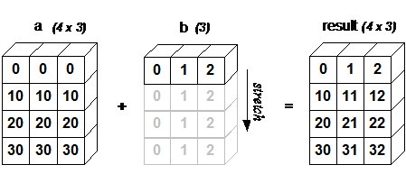
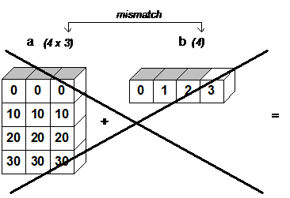

AI school club
Lecture 2. Numpy and Pandas
Alex Avdiushenko
October 8, 2024
NumPy
Since 1995 known as numeric, since 2006 as NumPy — "Numerical Python extensions"
Features of the NumPy library
- Work with multi-dimensional arrays (tables)
- Quickly compute mathematical functions on multi-dimensional arrays
The core of the NumPy package is the ndarray object
Important differences between NumPy arrays and Python sequences
- NumPy array has a fixed length, which is determined at the time of its creation (unlike Python lists, which can grow dynamically)
- Elements in a NumPy array must be of the same type
- You can perform operations directly on NumPy arrays
Speed of NumPy is due to:
- Implementation in C
- Vectorization and Broadcasting (e.g., multiplication of arrays of compatible shapes)
Ways to create Numpy arrays
Conversion from Python structures
During conversion, you can specify the data type using the dtype argument:
Or similarly
Generation of numpy arrays
- arange — analogue of Python's range, to which a non-integer step can be passed
- linspace —
a way to evenly divide a segment into
n-1intervals - logspace — a way to divide a segment on a logarithmic scale
- zeros — creates an array filled with zeros of the specified dimension
- ones — creates an array filled with ones of the specified dimension
- empty — creates an array of the specified dimension not initialized with any value
The array sizes are stored in the shape field, and the number of dimensions are stored in ndim.
The reshape method allows you to transform the dimensions of an array without changing the data, but possibly with copying.
To unroll a multi-dimensional array into a vector, you can use the ravel function (equivalent to `reshape(-1, order=order)`).
Indexation
In NumPy, familiar Python indexing works, including the use of negative indices and slices.
You can use lists as indices.
Reading from disk
(but better use pandas)
Broadcasting and Vectorization
Operations in NumPy can be performed directly on vectors of equal dimension without using loops. For example, the computation of the element-wise difference between vectors looks like this:
Similarly, for multi-dimensional arrays.
Note: All arithmetic operations on arrays of the same size are performed element-wise.
Broadcasting
Broadcasting removes "the same dimension" rule and allows you to perform arithmetic operations on arrays of different, but still, aligned dimensions. The simplest example is multiplying a vector by a number

The rule of dimensionality consistency is expressed in one sentence:
For broadcasting, the dimensions along the axes in two arrays must either be the same,
or one of them must be equal to one.
Add the same vector to each row of the matrix.

Now if we want to do the same trick but with columns, we can't just add a vector consisting of 4 elements because in this case the dimensions will not be coordinated.

First, the vector needs to be transformed to the form:
And then add the matrix to it:
If you need to multiply multidimensional arrays not element-by-element, but according to the rule of matrix multiplication, you should use np.dot. Transposition is done with array.T
Note: Each of the listed functions has the axis parameter, which indicates along which dimension to perform this operation. By default, the operation is performed on all values of the array.
Operations
Concatenation of multidimensional arrays
You can concatenate several arrays using the functions np.concatenate, np.vstack, np.hstack, np.dstack
Numpy types
Function vectorization
Pandas
Consider the Pandas library (named from panel data), designed for reading, preprocessing and fast visualization of structured data, as well as for simple analytics.
Even when there are only two arrays (for example, grouping by one and aggregating by the second), Pandas is already better. The column titles should correctly reflect the physical meaning, the index (row labels) is not necessarily numerical.
Slices in DataFrames
Note: If you want to modify the data of a slice without changing the main table, you need to make a copy.
Note: If you want to change the main table, use loc/iloc.
And don't do this way:
You can get the values of only the necessary columns by
passing in [] the column name (or list of column names).
Note: If we pass the name of one column, we get an object of class pandas.Series, and if a list of column names, we get a pandas.DataFrame. To get a numpy.array, refer to the values field.
Series and DataFrame have many common methods.